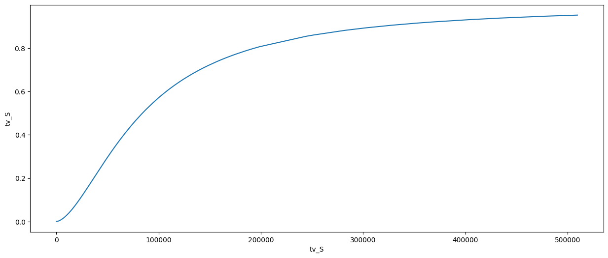
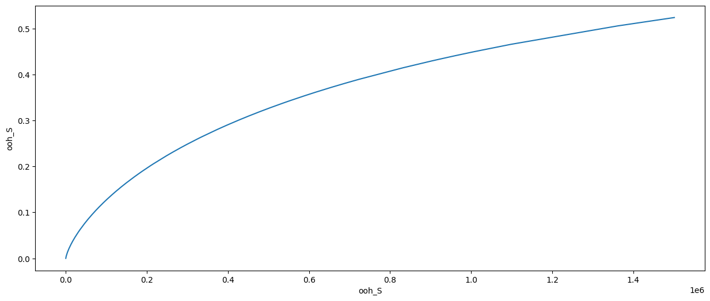
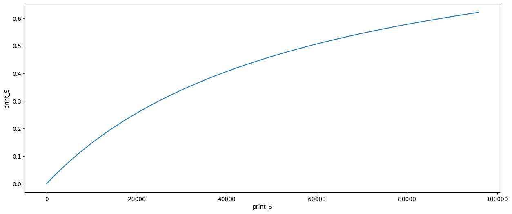
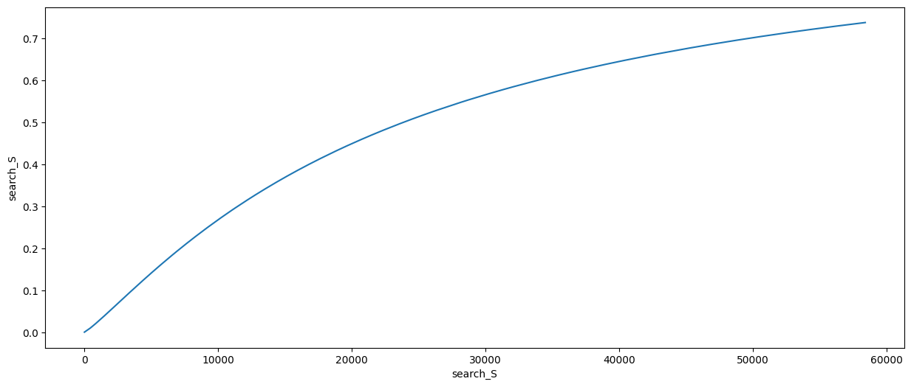
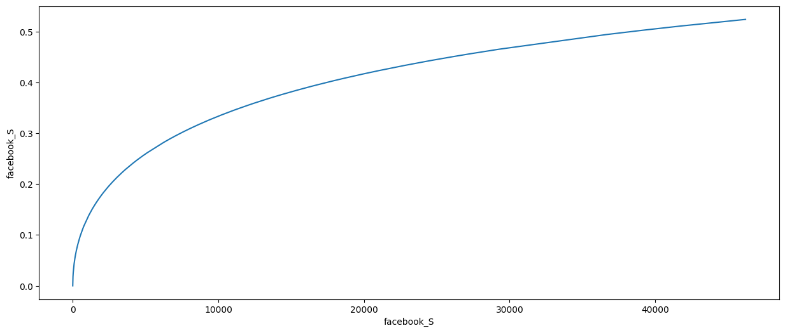
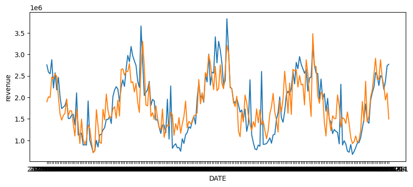

import pandas as pd
import numpy as np
import matplotlib.pyplot as plt
import seaborn as sns
import optuna
from functools import partial
from sklearn.linear_model import Ridge
from sklearn.model_selection import TimeSeriesSplit, cross_validate
from sklearn.metrics import mean_squared_error, mean_absolute_percentage_error, mean_absolute_error
from scipy.linalg import LinAlgWarning
import warnings
from glum import GeneralizedLinearRegressor as glm
# glmnet packages
warnings.filterwarnings("ignore", category=FutureWarning)
warnings.filterwarnings('ignore', category=LinAlgWarning)
warnings.filterwarnings('ignore', category=RuntimeWarning)
pd.set_option('display.float_format', lambda x: '%.5f' % x)
np.set_printoptions(suppress=True)
---------------------------------------------------------------------------
ModuleNotFoundError Traceback (most recent call last)
Cell In[1], line 1
----> 1 import pandas as pd
2 import numpy as np
3 import matplotlib.pyplot as plt
ModuleNotFoundError: No module named 'pandas'
df = pd.read_csv("/Users/pedro.hcardoso/dev/book/marketing-book/datasets/weekly_ad_spend.csv")
df
| DATE | revenue | tv_S | ooh_S | print_S | facebook_I | search_clicks_P | search_S | competitor_sales_B | facebook_S | events | newsletter | |
|---|---|---|---|---|---|---|---|---|---|---|---|---|
| 0 | 2015-11-23 | 2.754372e+06 | 67075.04 | 0.0 | 38185.466667 | 7.290385e+07 | 0.000000 | 0 | 8125009 | 22821.398744 | na | 19401.653846 |
| 1 | 2015-11-30 | 2.584277e+06 | 85840.36 | 0.0 | 0.000000 | 1.658110e+07 | 29511.715457 | 12400 | 7901549 | 3425.857351 | na | 14791.000000 |
| 2 | 2015-12-07 | 2.547387e+06 | 0.00 | 396835.2 | 1361.600000 | 4.995477e+07 | 36132.358958 | 11360 | 8300197 | 12769.126133 | na | 14544.000000 |
| 3 | 2015-12-14 | 2.875220e+06 | 250350.92 | 0.0 | 53040.000000 | 3.164930e+07 | 36804.210958 | 12760 | 8122883 | 8401.472031 | na | 2800.000000 |
| 4 | 2015-12-21 | 2.215953e+06 | 0.00 | 832008.0 | 0.000000 | 8.802269e+06 | 28401.744069 | 10840 | 7105985 | 2068.747816 | na | 15478.000000 |
| ... | ... | ... | ... | ... | ... | ... | ... | ... | ... | ... | ... | ... |
| 203 | 2019-10-14 | 2.456240e+06 | 0.00 | 96692.8 | 61489.466667 | 0.000000e+00 | 152840.323412 | 44840 | 7612762 | 0.000000 | na | 28157.000000 |
| 204 | 2019-10-21 | 2.182825e+06 | 61967.04 | 0.0 | 0.000000 | 5.688196e+07 | 103680.047821 | 41480 | 6701667 | 13362.457552 | na | 10644.000000 |
| 205 | 2019-10-28 | 2.377707e+06 | 8793.00 | 22550.4 | 6990.400000 | 0.000000e+00 | 138387.704138 | 45880 | 7688920 | 0.000000 | na | 9597.000000 |
| 206 | 2019-11-04 | 2.732825e+06 | 8981.20 | 0.0 | 9620.533333 | 0.000000e+00 | 151707.990462 | 53640 | 8815710 | 0.000000 | na | 90189.000000 |
| 207 | 2019-11-11 | 2.767788e+06 | 0.00 | 0.0 | 0.000000 | 1.279811e+08 | 0.000000 | 0 | 9067759 | 36619.075937 | na | 19401.653846 |
208 rows × 12 columns
def adstock_transform(x, retention_rate, duration=13, peak_delay=None, method='geometric'):
x_adstock = np.zeros_like(x)
if method == 'convolution':
if peak_delay:
weights = [retention_rate**((w-peak_delay)**2) for w in range(0, duration)]
else:
weights = [retention_rate**w for w in range(0, duration)]
x_adstock = x.rolling(duration, min_periods=1).apply(lambda x: np.average(x[::-1], weights=weights[:len(x)]))
if method == 'geometric':
x_adstock = x + x.shift(1).fillna(0)*retention_rate
return x_adstock
def hill_transform(x, slope, inflexion):
inflexion = np.dot((np.min(x), np.max(x)), (1- inflexion, inflexion)) # linear interpolation/extrapolation by dot product
x_hill = x**slope / (x**slope + inflexion**slope)
return x_hill
control_features = ['competitor_sales_B', 'newsletter', 'search_clicks_P', 'facebook_I']
target_feature = 'revenue'
spend_features = ['tv_S', 'ooh_S', 'print_S', 'search_S', 'facebook_S']
train_test_split_fraction = (.33, .5)
model_params ={'alpha': (0.01, 1000)}
feature_params = {'tv_S':
{'adstock_params': {'retention_rate': (0.3, 0.7), 'duration': (1, 15), 'peak_delay': (0, 4), 'method': 'convolution'},
'hill_params': {'slope': (.1, 3), 'inflexion': (.1, 1)}},
'ooh_S':
{'adstock_params': {'retention_rate': (0.3, 0.7), 'duration': (1, 15), 'peak_delay': (0, 4), 'method': 'convolution'},
'hill_params': {'slope': (.1, 3), 'inflexion': (.1, 1)}},
'print_S':
{'adstock_params': {'retention_rate': (0.3, 0.7), 'duration': (1, 15), 'peak_delay': (0, 4), 'method': 'convolution'},
'hill_params': {'slope': (.1, 3), 'inflexion': (.1, 1)}},
'search_S':
{'adstock_params': {'retention_rate': (0.1, 0.3), 'method': 'geometric'},
'hill_params': {'slope': (.1, 3), 'inflexion': (.1, 1)}},
'facebook_S':
{'adstock_params': {'retention_rate': (0.1, 0.3), 'method': 'geometric'},
'hill_params': {'slope': (.1, 3), 'inflexion': (.1, 1)}}
}
lower_limits = [0, 0, 0, 0, 0, -np.inf, 0, 0, 0]
upper_limits = [np.inf, np.inf, np.inf, np.inf, np.inf, 0, np.inf, np.inf, np.inf]
model = glm(l1_ratio=0, alpha_search=True, family='gaussian', lower_bounds=lower_limits,
upper_bounds=upper_limits, max_iter=1000, scale_predictors=True)
model.fit(df[spend_features + control_features].values, df[target_feature].values)
y_hat = model.predict(df[spend_features + control_features].values)
mean_absolute_percentage_error(df[target_feature], y_hat)
0.29305069492210006
def optuna_trial(trial, df, control_features, target_feature, spend_features, train_test_split_fraction, feature_params, model_params):
#ridge_alpha = trial.suggest_float('rigde_alpha', model_params['alpha'][0], model_params['alpha'][1])
split_fraction = trial.suggest_float('train_test_split_fraction', train_test_split_fraction[0], train_test_split_fraction[1])
spend_features_hill = []
for feature in spend_features:
retention_rate = trial.suggest_float(f'{feature}_retention_rate',
feature_params[feature]['adstock_params']['retention_rate'][0],
feature_params[feature]['adstock_params']['retention_rate'][1])
if 'duration' in feature_params[feature]['adstock_params'].keys():
duration = trial.suggest_int(f'{feature}_duration',
feature_params[feature]['adstock_params']['duration'][0],
feature_params[feature]['adstock_params']['duration'][1])
else:
duration=None
if 'peak_delay' in feature_params[feature]['adstock_params'].keys():
peak_delay = trial.suggest_int(f'{feature}_peak_delay',
feature_params[feature]['adstock_params']['peak_delay'][0],
feature_params[feature]['adstock_params']['peak_delay'][1])
else:
peak_delay = None
method = feature_params[feature]['adstock_params']['method']
slope = trial.suggest_float(f'{feature}_slope',
feature_params[feature]['hill_params']['slope'][0],
feature_params[feature]['hill_params']['slope'][1])
inflexion = trial.suggest_float(f'{feature}_inflexion',
feature_params[feature]['hill_params']['inflexion'][0],
feature_params[feature]['hill_params']['inflexion'][1])
df[f'{feature}_adstocked'] = adstock_transform(df[feature], retention_rate, duration, peak_delay, method)
df[f'{feature}_hill'] = hill_transform(df[f'{feature}_adstocked'], slope, inflexion)
spend_features_hill.append(f'{feature}_hill')
lower_limits = [0, 0, 0, 0, 0, -np.inf, 0, 0, 0]
upper_limits = [np.inf, np.inf, np.inf, np.inf, np.inf, 0, np.inf, np.inf, np.inf]
features = spend_features_hill + control_features
split_point = int(df.shape[0]*split_fraction)
train, test = df.iloc[:split_point], df.iloc[split_point:]
model = glm(l1_ratio=0, alpha_search=True, family='gaussian', lower_bounds=lower_limits,
upper_bounds=upper_limits, max_iter=1000, scale_predictors=True)
model.fit(train[features], train[target_feature])
y_hat = model.predict(test[features])
score = mean_absolute_percentage_error(test[target_feature], y_hat)
return score
objective = partial(optuna_trial,
df = df,
control_features = control_features,
target_feature = target_feature,
spend_features = spend_features,
train_test_split_fraction = train_test_split_fraction,
feature_params = feature_params,
model_params = model_params)
optuna.logging.set_verbosity(optuna.logging.WARNING)
study = optuna.create_study(direction='minimize')
study.optimize(objective, n_trials=2000, show_progress_bar=True)
Best trial: 1501. Best value: 0.197198: 100%|███████████████████████████████████████| 2000/2000 [17:54<00:00, 1.86it/s]
study.best_params
{'train_test_split_fraction': 0.4431413342517615,
'tv_S_retention_rate': 0.6995628865372254,
'tv_S_duration': 12,
'tv_S_peak_delay': 0,
'tv_S_slope': 1.6627680487194694,
'tv_S_inflexion': 0.1653842797910749,
'ooh_S_retention_rate': 0.6629467959196339,
'ooh_S_duration': 9,
'ooh_S_peak_delay': 0,
'ooh_S_slope': 0.746882007115435,
'ooh_S_inflexion': 0.8786273214020425,
'print_S_retention_rate': 0.6863876071033824,
'print_S_duration': 13,
'print_S_peak_delay': 4,
'print_S_slope': 0.9965785014105573,
'print_S_inflexion': 0.6085659077398262,
'search_S_retention_rate': 0.10396974389195965,
'search_S_slope': 1.1575658242551174,
'search_S_inflexion': 0.40778685345242804,
'facebook_S_retention_rate': 0.1743852330752176,
'facebook_S_slope': 0.514981248127642,
'facebook_S_inflexion': 0.8282788841100059}
study.best_value
0.19719844977180315
for feature in spend_features:
x = df[feature]
x_adstock = adstock_transform(x, study.best_params[f'{feature}_retention_rate'])
x_hill = hill_transform(x_adstock, study.best_params[f'{feature}_slope'], study.best_params[f'{feature}_inflexion'])
plt.subplots(figsize=(15,6))
sns.lineplot(x=x_adstock, y=x_hill)
plt.show()





spend_features_hill = []
for feature in spend_features:
x = df[feature]
x_adstock = adstock_transform(x, study.best_params[f'{feature}_retention_rate'])
x_hill = hill_transform(x_adstock, study.best_params[f'{feature}_slope'], study.best_params[f'{feature}_inflexion'])
df[f'{feature}_hill'] = x_hill
spend_features_hill.append(f'{feature}_hill')
# rigde_alpha = study.best_params['rigde_alpha']
features = spend_features_hill + control_features
model = glm(l1_ratio=0, alpha_search=True, family='gaussian', lower_bounds=lower_limits,
upper_bounds=upper_limits, max_iter=1000, scale_predictors=True)
model.fit(df[features], df[target_feature])
#model = ElasticNet(alpha=0, lower_limits=lower_limits, upper_limits=upper_limits, n_splits=0, lambda_path=[0, rigde_alpha])
#model.fit(df[features], df[target_feature])
GeneralizedLinearRegressor(alpha_search=True, family='gaussian',
lower_bounds=[0, 0, 0, 0, 0, -inf, 0, 0, 0],
max_iter=1000, scale_predictors=True,
upper_bounds=[inf, inf, inf, inf, inf, 0, inf, inf,
inf])In a Jupyter environment, please rerun this cell to show the HTML representation or trust the notebook. On GitHub, the HTML representation is unable to render, please try loading this page with nbviewer.org.
GeneralizedLinearRegressor(alpha_search=True, family='gaussian',
lower_bounds=[0, 0, 0, 0, 0, -inf, 0, 0, 0],
max_iter=1000, scale_predictors=True,
upper_bounds=[inf, inf, inf, inf, inf, 0, inf, inf,
inf])y_hat = model.predict(df[features])
score = mean_absolute_percentage_error(df[target_feature], y_hat)
score
0.2320457879802524
pd.DataFrame.from_dict({'feature':pd.Series(features), 'coef': pd.Series(model.coef_)})
| feature | coef | |
|---|---|---|
| 0 | tv_S_hill | 871899.41364 |
| 1 | ooh_S_hill | 956559.57277 |
| 2 | print_S_hill | 467197.97432 |
| 3 | search_S_hill | 0.00000 |
| 4 | facebook_S_hill | 1346347.73092 |
| 5 | competitor_sales_B | 0.00000 |
| 6 | newsletter | 6.86293 |
| 7 | search_clicks_P | 4.40839 |
| 8 | facebook_I | 0.00000 |
df['y_hat'] = y_hat
plt.subplots(figsize=(10, 4))
sns.lineplot(data=df, x='DATE', y='revenue')
sns.lineplot(data=df, x='DATE', y='y_hat')
plt.show()
